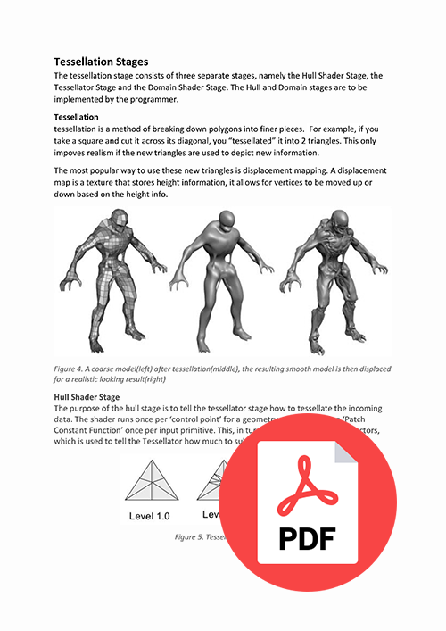

As part of an exam for an exam in 2017, we had to create an hlsl DirectX geometry shader that had some unique feature to it, so nothing generic like a water or grass shader. I ended going for a voxelization shader that implemented using some of the DirectX 11 specific functionalities, namely the Hull, Domain and Tessellator stages. While the goal was to create a unique geometry shader, I ended up focussing a lot more on expanding my existing knowledge about shaders and their stages. After the shader was done we also had to implement it later into an existing framework that did not fully support DirectX 11 shaders with their specific stages, this problem made me look into how engines work more and how to implement Direct X in them.
In making this shader, I had to research the different stages pertaining the tessellation stages of the DirectX 11 pipeline, at first this was a pretty tough task as most resources don’t go very in depth with actual code.
By working on both a geometry and tessellation parts of the shader pipeline, I was able to get a decent understanding of shaders and their different stages and purposes.